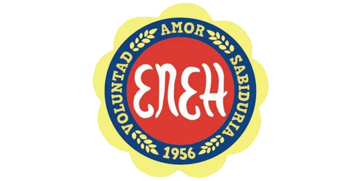

Enlaces
19/08/2024
20/08/2024
27/08/2024
28/08/2024
¿Por qué estudiar la Carrera de perito en desarrollo de contenido digital y software?
En la escuela de educación para el hogar "Marion G. Bock" la carrera Perito en desarrollo de contenido digital y software es muy bien tratada y enseñada haciendo que cualquier persona con una pasión por la tecnologia o la computación puede aprender muy comodamente y de una manera mas practica
En este instituto se consta de maestros altamente capacitados en las areas en las que enseñan y el equipo para la enseñanza son bastante avanzados y aseguraran ser altamente utiles en el proceso de aprendizaje
Saber este tipo de cosas relacionadas a la programacion es muy util hoy en día porque es muy sabido por todos que este tipo de trabajos tienen una alta demanda y seria muy bien remunerado
ademas de que este tipo de institutos estan asociados a ciertas empresas para hacer practicas lo cual asegura que se obtendra experiencia laboral real ademas de la academica
Esta carrera te permite combinar habilidades técnicas con creatividad, lo que resulta en un campo de estudio versátil y dinámico. Esto puede ser especialmente atractivo si disfrutas tanto de la tecnología como de la expresión artística.
